Open Settings › Church profile, or tap the logo or mark at the top left of any page. A preview of the page header sits at the top, then three sections and one Save church profile button.

| Section | What to do |
|---|---|
| Logo | Choose logo, then crop it to a square: drag to move, pinch to zoom, then Use logo. It replaces the built-in mark at the top left of every page. Use built-in mark puts the original back. The home-screen app icon is unchanged. |
| Church name | Shown at the top of every page, on the opening screen and on new service reports. Services already loaded and older reports keep the name they had. |
| Banner | Choose banner, then crop it to its 3:1 shape (three times as wide as it is tall), so you choose which part of the photo shows. It is used on printed services and reports. Use built-in banner is always available. |
Choose a JPEG, PNG or WebP photo up to 5 MB and 40 megapixels. The app saves exactly what is inside the crop frame, and a transparent background stays transparent. Keep essential details away from the edges. The logo and banner are included in backups.
Appearance offers thirteen preset themes and Create custom theme: Midnight Lime, Royal Navy, Warm Ivory, Deep Plum, Slate Teal, Morning Sky, Sage Linen, Ocean Deep, Cobalt Night, Graphite (clean white, for dark booths), Paper & Ink (near-black ink, for well-lit rooms), Paper & Ink (blue) (ink-blue buttons) and Meadow. Preview the choice, then Save appearance; Cancel or Back discards the preview. Test readability in the actual room, including overtime and warning labels. A beautiful palette is not useful if the operator cannot distinguish a warning at a glance. Stage screens use the same theme. Under the themes, Finish chooses what the app's background and panels look made of; see Finish.

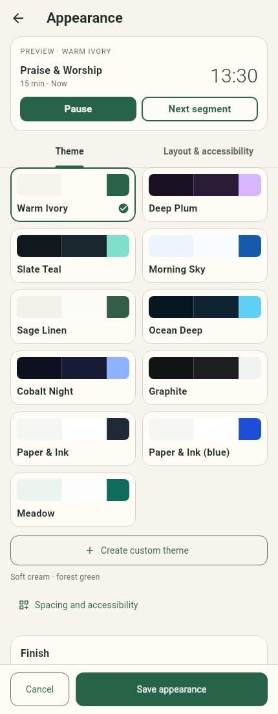
The Layout & accessibility tab sets the Desktop layout (Tablet layout on a 10-inch or larger tablet; a phone has neither), Show keyboard keys on buttons and Saved looks (all three are described in Run the service from a PC), then Layout density (Compact, Comfortable, Spacious or Automatic, the default), High contrast, Reduced motion and the divider style. With Reduced motion on, a cue that slides in simply appears, and Screen flash gives the screen a coloured edge instead of a flash. On a PC or a large tablet, Settings › Desktop layout (or Tablet layout) opens straight on this tab and names the layout in use, and the Theme tab has a button that switches to it.
Other useful settings:
| Setting | Scope |
|---|---|
| At zero | Display settings. Shared by every service: Show 00:00 or Custom text. |
| Overtime alert | Display settings, next to At zero. How strongly stage screens show overtime: Gentle, Strong (the default, a solid red screen) or Strongest (the red screen pulsing slowly). See Overtime on a stage screen. |
| Default end screen | Display settings. Clock to begin with, or End screen, for new programs and Quick timers; existing programs keep their own setting. |
| Clock format | Display settings. 12 or 24 hour for the clock on stage (the flip clock shows AM and PM tiles in 12 hour, none in 24 hour), and the Blinking colon on paired and web screens (on by default). Times you choose in the app, such as the pre-service countdown, are always 24-hour. |
| LED preview shape | Display settings. Square or circular visual cells; does not reconfigure physical hardware. |
| Desktop layout, or Tablet layout | How Live is arranged in a wide window: Mission control, Three panes, The dial, Keys or Classic. Not shown on a phone or a small tablet. |
| Warnings & alerts | Shared rules; phone alerts, or Alerts on this computer on a PC; lock-screen controls; clicker and foot pedal, and its test page. |
| Appearance | Theme, then Finish and its Strength. See Finish. |
| Stage cues | Shared prepared cue buttons, with their effect and their formatting for the LED sign and for screens. |
| Quick message presets | Saved rich messages for stage screens. |
| Screens & devices | Pairing, saved devices, web screens, Requests from the stage, the Second screen on a PC, and Full screen on this phone. Each says which Screens group it is in, with a Screens button. |
| Keep screen awake | One row that opens While a service is running (the default), Always or Never. See Keep screen awake. It is not a guarantee against force-stop or power loss. |
| Settings PIN | Optional lock for Settings, deleting and sign administration. See Protect data and manage the LED device. |
| About | Installed version, creator I-Proton, What's new, Check for updates, Check for updates automatically, Your data, Privacy policy, Guided practice, Diagnostics and the open-source licences. |
Use Search settings at the top of Settings to find a page by name; "layout" finds Desktop layout on a PC, or Tablet layout on a large tablet, and "keyboard" finds Keyboard shortcuts.
Settings in a wide window. The page runs across the window, with the groups in three columns when there is room, and it no longer stops at 1200 pixels. Appearance keeps its preview beside the themes and layouts. Display settings lists its sections down the left. Warnings & alerts and Stage cues show what your display will show. Church profile, Backup & restore, Feedback centre, Settings PIN, About, Diagnostics and Ready for service each put a preview or a summary beside the settings.
The simulator display profile is a preview assumption until supported hardware is connected and validated. Do not interpret a manually set preview width as a measurement of an unknown sign.
Finish
The theme chooses the colours. The finish chooses what the app's background and panels look made of. It is in Settings › Appearance › Theme, under the themes.

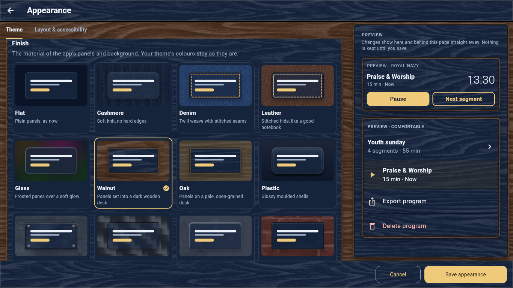

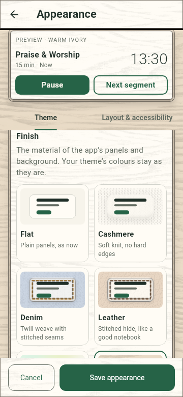
Tap a picture tile to try it. The app behind the editor changes at once, and Save appearance keeps it. Cancel or Back puts it back. Texture credits, under the tiles, says where each texture comes from. The finishes are:
| Finish | What it looks like |
|---|---|
| Flat | Plain panels, as you have always had. Nothing about Flat changed. |
| Cashmere | A soft knit with padded edges, no hard edges. |
| Denim | Denim twill, with a stitched seam like raised thread. |
| Leather | Embossed leather, stitched like Denim. |
| Glass | Frosted panes over soft fields of coloured light from your theme, with a bright edge where the light comes in. |
| Walnut | Panels set into a dark wooden desk, in an inlay with a lit lip. |
| Oak | Panels set into a pale wooden desk, the same way. |
| Plastic | Moulded, pebbled shells with a gloss and a moulded parting line. |
| Bridge console | A brushed steel plate with a bevelled edge, and screws at the corners of every plate. |
| Carbon fibre | A real carbon fibre twill with a sheen. |
| Marble | A polished marble slab with gentle veins and a polished chamfer. |
| Brick | A brick wall with painted signboards that cast a shadow on it. |
The tiles are in that order: Flat, then the cloths (Cashmere, Denim and Leather), Glass, the woods (Walnut, Oak), Plastic, the metals (Bridge console, Carbon fibre), Marble and Brick.

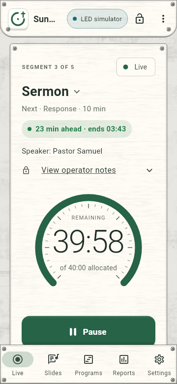

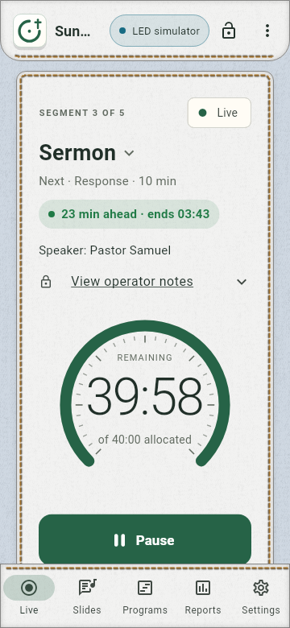
- Strength has Subtle and Full. A finish now shows at Full until you choose otherwise, except Walnut, Oak and Carbon fibre, which start at Subtle. When you choose Subtle or Full yourself, that choice stays when you try another finish, and a small button offers the finish's own, for example Glass looks best at Full. Before 0.39.0 every install saved Subtle, chosen or not, so a Subtle saved before now counts as not chosen, once, and each finish shows at its own strength. A Full you chose is kept. Strength is greyed out while the finish is Flat.
- Words always sit on a panel and stay easy to read. The texture shows in the gaps between panels, at the edges and on the header, and is quiet under text. Each finish takes its tint from your theme, built-in or custom, and is held back wherever it would make text, grey text or the accent harder to read than the plain theme. Pale themes get a paler material for that reason.
- High contrast switches it off. Every finish is turned off, so outlines and text stay plain. The Finish section then says "High contrast is on, so panels stay plain."
- It never applies to stage screens. Stage screens, the second screen, web screens, full screen, the stage picture in the simulator and the LED sign never use a finish. Nothing is sent to any other device.
- The finish covers every page and every popup. Programs, Reports, the program editor, Settings and all its pages, Screens & devices, Join a service, What's new and the lists on a phone are made of the finish, as Live's cards are. So are dialogs such as End Sunday Service?, bottom sheets, menus, the date and time pickers and Commands (Ctrl+K), with the finish's stitches or screws. The red End service button stays red. Tooltips and short messages take the finish's panel colour. The Updated to … and Version … is available notices, hints, the controls-locked notice and the service strip under the header are no longer flat dark cards on the material. The slides themselves never use a finish.
- Cards are made of the material too. Small cards on a panel, such as the groups in Settings, are the same material as the panel, a little darker and calmer, with the finish's own edge: stitched on Denim and Leather, an inlaid lip on Walnut and Oak, a polished edge on Marble, a moulded rim on Plastic, a bevel and screws on Bridge console. The lines between rows are grooves, and the row under the pointer or the keyboard looks pressed in. Words stay as readable as on the panel.
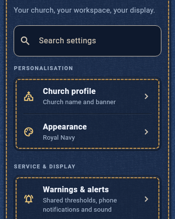

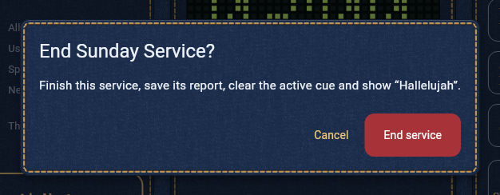
- Nothing runs over a panel's edge. On every finish, lists, rows and pictures stop just inside a panel's edge and fade softly under it as they scroll, instead of being drawn across it. On Denim and Leather the stitched seam is a frame inside the edge, and text and buttons pass softly under it.
- It is saved with the look. The finish and its strength are part of the appearance, so Save this look keeps them. Like the rest of the appearance they stay on this device and are not in a backup, except inside a look you saved. Appearance saved before 0.37.0 opens as Flat, Subtle.
- The materials are photographs of the real thing (brick, brushed steel, knit, denim, leather, walnut, oak, marble, carbon fibre, paper and moulded plastic, all from CC0 sources). Your theme still chooses the colours; the photograph only gives the texture, and it is held back wherever it would make words harder to read.
- A finish is no slower than Flat. Each panel and background is drawn once and kept, so a tick of the clock or a scroll does not draw it again. Flat is exactly as it was.
Papery comes with Paper & Ink. Whenever the theme is Paper & Ink or Paper & Ink (blue), the app is drawn in Papery: a warm sheet of fine paper, and brighter panels like loose sheets with a short soft shadow, a crisp thin edge and square printed buttons. It is part of those themes, not a choice, so it is not a tile. With a Paper & Ink theme selected, the Finish section shows a short note in its place, and Strength still applies. The finish you had chosen is kept underneath and comes back with any other theme. A custom theme is not Paper & Ink, even with the same colours. High contrast still draws plain panels. Paper & Ink comes with its paper finish at Full.

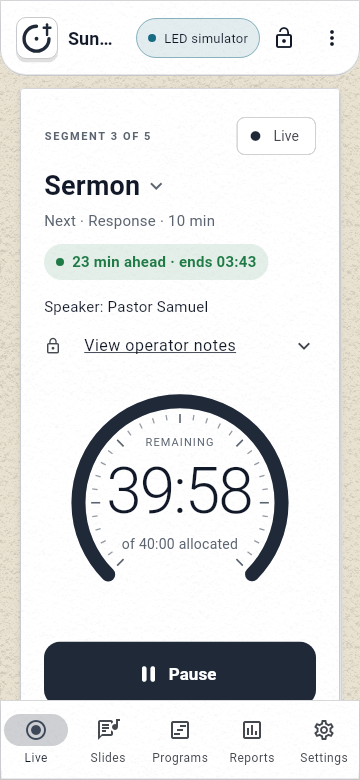

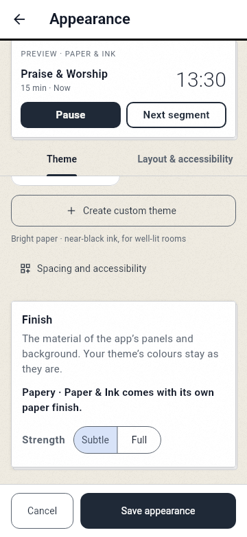
Keep screen awake
Keep screen awake is one row in Settings, under Service & display, like Warnings & alerts: a sun icon, the title, your current choice under it (for example While a service is running) and a small arrow. Tap the row to open the three choices, each with its short note. The one you have now is ticked, and the one you tap is used straight away. It works with the keyboard and a screen reader, and with large text on a small phone. Searching Settings for "awake" finds it.

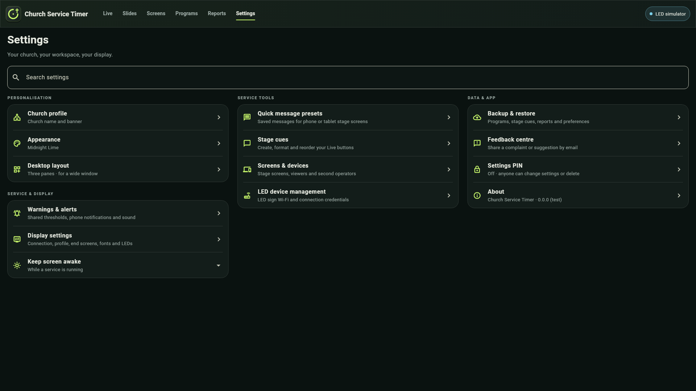

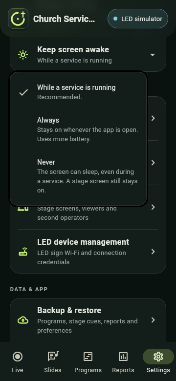
| Choice | What it does |
|---|---|
| While a service is running | The default. The screen stays on while a service or Quick timer is running (paused too, and while counting down to a scheduled start), and while this device is sharing to other screens or following as a viewer. On Live standing by, and in Settings, Programs and Reports with nothing running, the screen can go to sleep as the phone normally does. It is held again as soon as a service starts, and let go as soon as it ends, with nothing to press. |
| Always | The old way: the screen stays on whenever the app is open. It uses more battery. |
| Never | The screen can go to sleep, even during a service. |
- A stage screen always stays on, whichever you choose, because nobody is there to touch it. That includes a paired phone or tablet set up as a stage screen and a second screen.
- A device that is sharing or following stays awake with While a service is running and Always. With Never it can sleep.
- A slide or Black on a screen holds the device awake while While a service is running is chosen, even with no service running. It lets go when you clear it. See Show words with Slides.
- A web stage screen in a browser asks the browser to keep the screen on only while it is a stage display or a service is running, and lets go otherwise.
- On a PC the computer still does not go to sleep while a service runs or screens are shared, but the monitor may turn off when no service is running.
- Existing installs move to the new default. If you had switched the old setting off, it stays Never. Everyone else is now on While a service is running.
- Always is kept on this phone or PC only, not in backups. Earlier versions can still read the saved data.
- If the screen setting could not be applied, the message and Retry screen setting still show under the row, and the retry button goes away once it works.
- It is not a guarantee against force-stop or power loss.
If the phone's screen goes dark on Live between services, that is the new default doing its job. Start the service and the screen is held again.